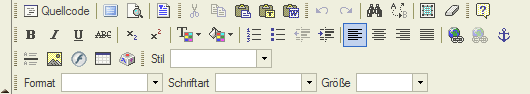
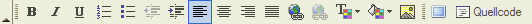
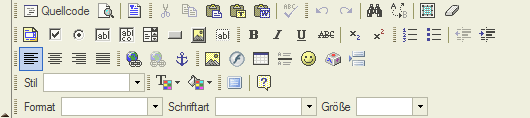
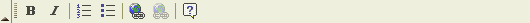
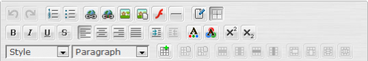
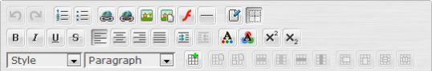

Verwaltung des eigenen Profils
Profil bearbeiten |
Im Profil können die eigenen persönlichen Daten jedes Backend-Users angepasst werden. Das Feld Email sollte auf jeden Fall eine gültige Email-Adresse enthalten, da an diese Adresse sämtliche Änderungen im System mitgeteilt werden. Diese Adresse ist ausschließlich für Backend-User sichtbar und somit keinem Spambot zugänglich. |
Auf der linken Seite haben Sie die Möglichkeit aus dem Untermenu den Punkt "Persönliche Daten" auszuwählen. Dieser Menüpunkt ist selbsterklärend, der wichtigste Hinweis bezüglich der Datensicherheit befindet sich oben auf der Seite. Mit "andere Benutzer" sind hier lediglich die Backend-Benutzer gemeint. Im Moment hat das Ausfüllen der Felder noch keine Auswirkungen. |

WYSIWYG Editoren
Unter dem Punkt "WYSIWYG Editor" können Sie nun entscheiden, ob Sie mit einem WYSIWYG Editor arbeiten wollen und wenn mit welchem.
Zur Auswahl stehen
- WYSIWYG Editor ausgeschaltet (Keiner der unten aufgeführen Editoren wird verwendet).
In diesem Fall wird automatisch der Content Part "HTML" verwendet.
- SPAW2
- FCKeditor (Standard nach der Installation)
- SPAW
Darunter finden Sie noch ein Auswahlmenue in dem standardmäßig "phpwcms_default" steht. Mit der Auswahl in diesen Feldern können Sie die Funktionalität des Editors bestimmen.
Nachfolgend finden Sie Screenshots der einzelnen Einstellungen.
FCKeditor
|  |
| Auswahl: FCKeditor: phpwcms_default |
|  |
| Auswahl: FCKeditor: phpwcms_basic |
|  |
| Auswahl: FCKeditor: Default |
|  |
| Auswahl: FCKeditor: Basic |
SPAW2
|  |
| Auswahl: SPAW2: toolbarset_standard |
|  |
| Auswahl: SPAW2: toolbarset_all |
 |
| Auswahl: SPAW2: toolbarset_mini |
Letzte Änderung: Dienstag, 04. Januar 2011